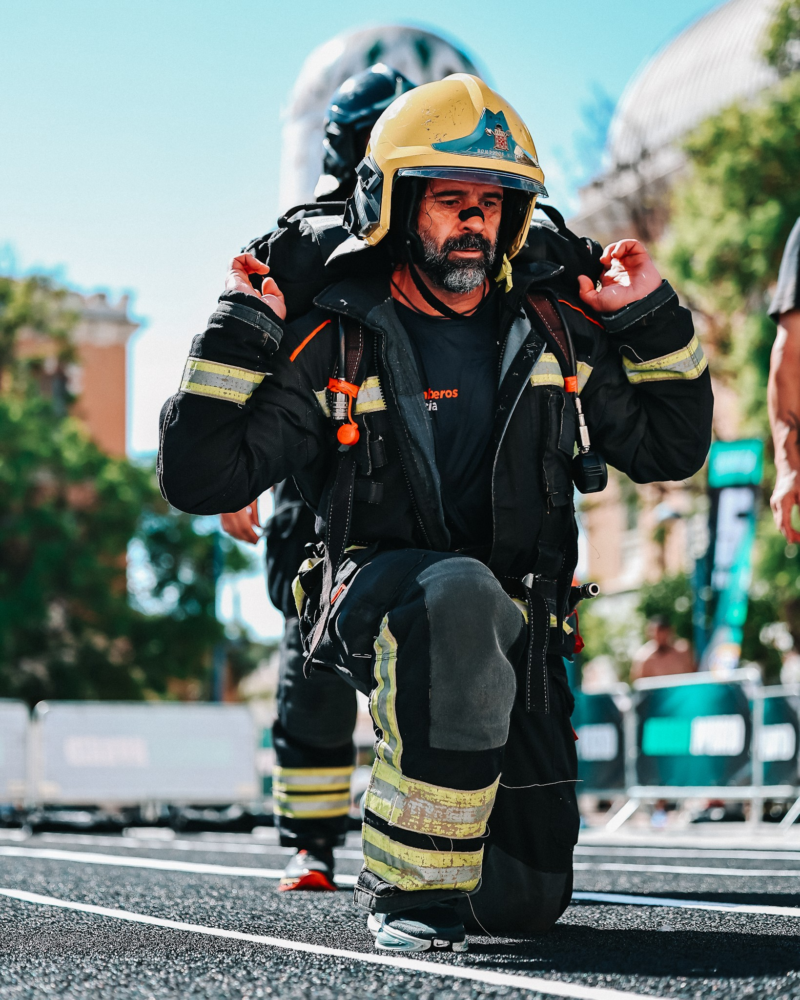

Murcia Hybrid turned the Cuartel de Artillería into a city-centre fitness-racing arena on 27 September, bringing running and functional work together for the event’s first edition.
The competition offered Open and Pro races for individuals and pairs. Open athletes covered four kilometres, while the Pro format stretched to eight kilometres, with every division moving through eight workout stations.

Eight stations, one urban arena
The programme moved athletes through Ski Erg, Sled Push, Burpee Broad Jumps, Rowing, Farmers Carry, Sandbag Lunges, Dead Ball and Wall Balls. Short running loops around the venue kept the race visible to spectators before competitors returned to the Patio de Armas.
Men’s, women’s and mixed-pair categories gave the day a wide competitive range, while free public access and a finish-zone programme made the historic complex part race venue and part meeting point.
Image Media coverage
Image Media’s photographers followed the action across the running sections and workout stations, documenting the effort, atmosphere and variety that shaped Murcia’s first hybrid race.
The event was presented by MPineda Experience, Reference Box and PUMBA, with support from the Ayuntamiento de Murcia.
View the Murcia Hybrid photo gallery →
Image Media coverage
Reporting: IM News Editorial Desk
Coverage photographers: Leandro Rocha, Regis Souza, Pedro Oliveira, Johnny, Jéssica Freitas and Luis Moreira / Image Media
Event date, venue, format and programme checked against official Murcia Hybrid and Ayuntamiento de Murcia sources.